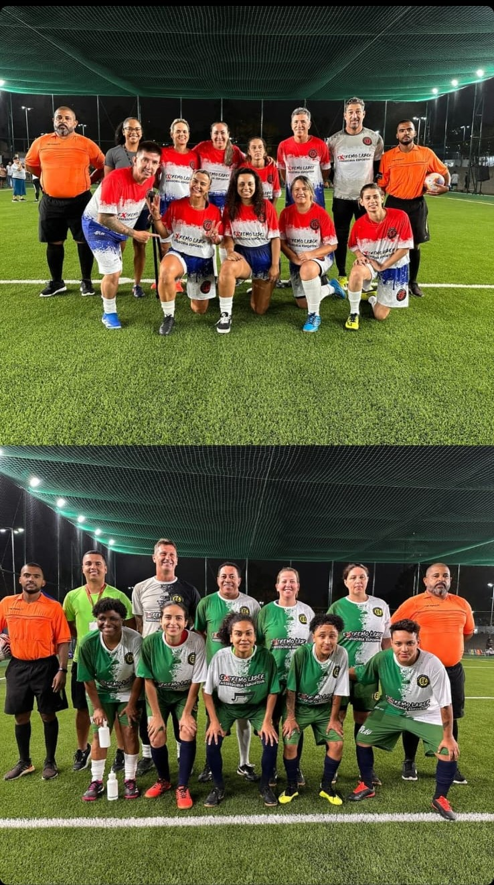

Sesc Mogi das Cruzes
Recém reformadado o sesc de Mogi das Cruzes fica aonde era o centro esportivo do Socorro.
O SESC Mogi das Cruzes é uma unidade de lazer e cultura do Serviço Social do Comércio localizada no bairro de Socorro, cidade de Mogi das Cruzes.
A inauguração da unidade foi em 6 de novembro de 2021, e já tendo muitas atrações, eventos, atividades e cursos para a população aproveitar.
Permanecendo com a mesmo infraestrutura o galpão, piscina e quadra de volei, ganhando um espaço novo a quadra de society, quadra de futsal, banheiros,
academia e espaço kids.
Cursos que oferecemos
- Futsal Feminino
- Oficina de Pinhole
- Natação
- Oficina de Elas programa Site
- Hidro
- Academia
- Entre Outros
A unidade já contou com show de Negra li, Karol conká e Lenime no inicio de 2024, em Maio teremos Show de Ana Cañas.

Com o Time Feminino de Futebol já teve apresetações de jogadora formiga e ex jogadores como Milene Domingo, Careca, Junior, Roseli, Goleiro Sérgio e Goleiro Mauro, fazendo um jogo amistoso com o time feminino do sesc e convidados.
Para se inscrever nos cursos, academina ou oficinas.